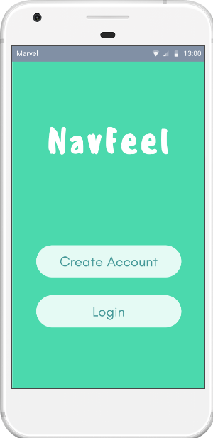

Shanaya Ukuwela.
An aspiring UI/UX Designer at the University of California, Irvine.

About
Education and Skills
University of California, Irvine
- Duration: September 2014 - June 2018
- Dean's Honor List
- GPA: 3.31
- Coursework: Data Structures in C++, Computational Linear Algebra, Intro to Statistics (CS-related)
Yonsei University, Seoul, Korea (Education Abroad Program)
- Duration: August 23, 2014 - December 22, 2014 (4 months)
Thoughts: Overall, going abroad for those 4 months was a life-changing experience. I was given a once-in-a-lifetime opportunity to explore a different country, having a completely different lifestyle from before. I learned to adapt to my surroundings, engage myself in a language I barely knew, and continue to be open-minded to a culture so different from my own.
Programming
- C++
- Python
- Assembly
- SQL
- Clion
- Eclipse
- Visual Studio
- Adobe Premiere Pro
- Marvel
Spoken Languages
- Spanish
- Korean
Projects
The following projects below are all school assignments throughout my college career at UCI.
NavFeel Android Application
Overview:
- Summary: Users want to better identify their emotions or combat their negative emotions and
identify possible causes which may be linked to their environment
(social, economic, daily challenges) or negative thought patterns.
With an application which takes input from users and aggregates this data into
insights for users about when and where they have felt certain ways in the past,
can better prepare them for a more positive future.
- Objective: To create an Android application that takes emotion and environmental data from
users to show how environment may affect users’ emotions.
- Approach: Users provide their input in the form of an emoji based selection paired with
a slider bar which allows users to specify the degree/intensity to which they feel this emotion,
and an optional text-based entry which can be analyzed for words correlated with each emotion and
overall text sentiment. NavFeel will also capture the location, weather,
and time that the entry was generated.
- Project Duration: January 2018 - March 2018
- Group Members: Angel Azpitarte,
Gina Robinson,
Ethan Sanchez
- Your Role: I developed low-fidelity prototype to track user flow, then researched common patterns in
mental health applications as well as color theory to design high-fidelity prototype
via Marvel.
- Links: NavFeel High-Fidelity Prototye
- Final Product: Application still in development.
UX Process:
Speaks Web Application
- Creating a web application game that teaches children with autism social skills
- Performed qualitative interviews with teachers and aids working with children with autism remotely to ensure autism-friendly design
- Tested high fidelity prototype on children with autism to confirm design is usable and accessible
Othello


- Created Othello class and implemented functions to produce
game logic (three separate files for user input, GUI interface, and game logic)
- Implemented one class for each file and created 24 functions to yield game logic
- Programmed a two-player, interactive strategy board game
Thoughts: When I was first assigned this project, I recall feeling extremely nervous to take it on. It was the first time I was required to code such a comprehensive project on my own, what with only a few months' prior experience under my belt. The entire process was grueling, most especially the game logic. I spent hours upon hours in lab, receiving the TA's help as often as I could. Through patience, perseverance, and constant trial-and-error I was finally able to make the game logic work. As I said before, this was my first time coding such a large project, which explains why my code isn't exactly as "up-to-standard" as it could be. Anyway, to put it simply, after I realized that I had the capability to complete this kind of project on my own, I felt a little more confident (as well as more capable) in pursuing a computer science degree.
Hobbies
INSA
Thoughts: To keep it simple, I joined UC Irvine's INSA dance team as a freshman in February 2014, with absolutely no prior dance experience. It was a struggle trying to keep up, disheartening when I was always put in the back of our performances at first. However, I continued to work hard and felt myself improve - juggling classes and work in between. It was a rewarding experience that learned and grew a lot from.
Cinematography/Editing
Thoughts: I was introduced to the world of film in high school in my TV Broadcast/Journalism class. I learned the art of creating, learning how to storyboard, capture the right shot, and continue to create stories that mattered to the audience. It allowed me to see the world in a different perspective, and realize that although this is an art, the main focus of my work was its content, and how the visuals I provided supplemented it.